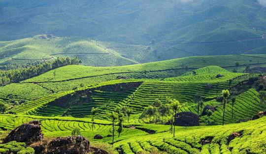

Munnar
Munnar, nestled in the lush Western Ghats of Kerala, rests on a breathtaking landscape in the southern part of India; rolling hills, mist-covered valleys, tea plantations, and cascading waterfalls adorn this enchanting hill station. One such natural marvel, Munnar is renowned not just for its scenic beauty but also for its colonial history, biodiversity, and deep-rooted cultural influences.
The name “Munnar” is believed to mean “three rivers” in Malayalam, referencing the confluence of the Muthirapuzha, Nallathanni, and Kundala rivers. Munnar has long been a retreat, once serving as a summer resort for British officials during the colonial era. Today, it is one of India’s most loved destinations for nature enthusiasts and peace seekers alike.
Though not tied to a single religious awakening, Munnar is a place where the spiritual and the natural coexist in harmony. The region is home to ancient temples, churches, and mosques, highlighting Kerala’s inclusive and diverse cultural fabric. The local population includes Malayalis, tribal communities like the Muthuvans, and migrants from neighboring regions, all of whom live in close communion with nature. Their lifestyles are intertwined with the land and reflect deep respect for traditional practices and ecological balance.
Munnar’s spiritual and cultural identity is visible in its tranquil surroundings—fog-laden tea gardens, peaceful monasteries, small hillside shrines, and silent valleys that evoke contemplation. Tourists often visit for rejuvenation, trekking through Eravikulam National Park, exploring Anamudi—the highest peak in South India—or experiencing the charm of colonial-era bungalows and plantations.
Altogether, Munnar offers a retreat into a world where simplicity, nature, and cultural heritage exist side by side. A visit to Munnar is not just a scenic escape—it’s an immersion into the rhythm of a region that speaks volumes through its landscapes, people, and traditions.
Alappuzha
Alappuzha, often called the “Venice of the East,” is located on the southwestern coast of Kerala and is just a couple of hours away from Kochi. This coastal town has the unique distinction of being one of India’s most iconic backwater destinations and a center of traditional houseboat tourism.
The town gets its charm from an intricate network of canals, lagoons, rivers, and lakes that stretch across the region. Alappuzha is known for its tranquil backwaters, where houseboats glide silently through palm-lined waters, offering a window into Kerala’s rustic lifestyle and aquatic ecosystem.
While Alappuzha may not be home to large wild mammals, it is a paradise for birdwatchers and nature lovers. You can spot a variety of bird species here, especially in and around the Pathiramanal Island and Kumarakom Bird Sanctuary nearby. Birds such as egrets, kingfishers, darters, herons, and even migratory species like pintail ducks and terns visit this region seasonally.
Beyond its natural beauty, Alappuzha holds historical significance. It was once a major port and trade center during colonial times and is known for its coir industry, traditional boat races like the Nehru Trophy, and architectural remnants of its maritime legacy, including old lighthouses, warehouses, and colonial-era buildings.
With its peaceful lagoons, vibrant birdlife, and timeless village atmosphere, Alappuzha is a must-visit for any traveler seeking a gentle yet immersive experience into Kerala’s soul. Whether aboard a houseboat or exploring a quiet riverside village, Alappuzha offers a blend of nature, culture, and history that leaves a lasting impression.

Kovalam for beaches
Kovalam, the iconic beach town of Kerala, is home to sun-kissed shores, swaying palms, and crescent-shaped beaches that exude a tranquil charm. Among its coastal marvels lies Lighthouse Beach, a serene stretch of golden sand that stands as a testament to nature’s calm and the vibrancy of coastal life. Kovalam’s beaches, lined with coconut groves and lapped by the Arabian Sea, offer more than just beauty — they embody the rhythm of relaxation and rejuvenation.
Once a sleepy fishing village, Kovalam evolved into a global retreat in the 20th century, attracting wanderers and seekers from all corners of the world. It became a haven not only for sunbathers and surfers, but also for those in search of peace, healing, and holistic well-being. Today, Kovalam continues to nurture souls, offering yoga, Ayurveda, and the quiet wisdom of the waves.
The town balances serenity and culture — with its humble fishing boats dotting the horizon and the ancient Vizhinjam lighthouse standing tall as a guardian of time. As the sun sets in Kovalam, painting the sky in hues of amber and rose, the beaches come alive with moments of connection, reflection, and coastal bliss.
Nestled along the Arabian Sea coast of Kerala, Kovalam is a beachside haven renowned for its sweeping crescent-shaped beaches, swaying coconut palms, and a unique blend of natural beauty and cultural richness. What once began as a quiet fishing village has now grown into one of India's most cherished beach destinations, without losing its soul. The most popular of the trio, named after the towering Vizhinjam Lighthouse. It offers panoramic views, sunbathing spots, seafood shacks, and an array of water sports like surfing and parasailing.
Kochi
In the vibrant heart of Kerala’s Malabar Coast lies Kochi, a city where history, spirituality, and multiculturalism converge. Revered as the Queen of the Arabian Sea, Kochi stands as a timeless port city that once welcomed traders from China, Arabia, Europe, and beyond — each leaving behind a trace that adds to its rich tapestry.
Among the city’s many iconic sites is the Paradesi Synagogue, St. Francis Church, and the Santa Cruz Basilica, each echoing centuries of global influence and devotion. But perhaps the most symbolic of Kochi’s spiritual and cultural significance is the Hill Palace and the Mattancherry Palace, often referred to as the Dutch Palace, an architectural gem that reflects the opulence and power of the erstwhile Kochi royal family.
The Mattancherry Palace, built in the 16th century and later renovated by the Dutch, is revered for its murals depicting Hindu epics, wooden ceilings, and colonial-era grandeur. It stands not just as a structure of history but as a symbol of Kerala's syncretic legacy, where Hindu tradition, European architecture, and royal patronage blend seamlessly.
Kochi, today, is a living museum, where ancient streets of Fort Kochi bustle with life and color, and the famed Chinese fishing nets stretch out into the sea like time-honored guardians of the coast. Its waterfront promenades, spice markets, and paved courtyards mirror the enduring energy of a city that honors its past while embracing modernity.
Like the Ruwanweliseya stupa that commands reverence in Anuradhapura, Kochi’s sacred and historic sites hold a deep spiritual and emotional significance for its people — becoming places of reflection, unity, and cultural pride.
Wayanad
Tucked away in the verdant embrace of Wayanad's misty highlands, the Pookode Sacred Grove is a timeless sanctuary that blends nature, mythology, and spiritual reverence. Home to ancient trees that have stood for centuries, this grove is considered a sacred space by locals and pilgrims alike, echoing the deep-rooted cultural traditions of Kerala’s indigenous tribes and Hindu faith.
Among these venerable giants, one tree in particular — an ancient sacred fig (Peepal) — stands as a symbol of enduring life and divinity. Much like the revered Jaya Sri Maha Bodhi in Sri Lanka, this tree is believed to be a living link to divine presence, where sages once meditated and where devotees now come to offer prayers, light oil lamps, and make silent wishes under its expansive canopy.
This sacred tree, nestled within the lush Pookode surroundings near the pristine Pookode Lake, is cared for by generations of temple caretakers and forest-dwelling communities. Encircled by a modest shrine, natural water springs, and hand-carved stone sculptures, the site exudes a mystical calm, amplified by the rhythmic chants of visiting devotees and the soothing murmur of leaves in the mountain breeze.
Visitors of all faiths come here — not only to seek blessings but also to absorb the tranquility and healing energy the grove radiates. Local legends speak of a “Prarthana Vriksha”, or Wish-Fulfilling Tree, believed to grant earnest prayers, especially during the early morning hours when the grove is bathed in golden light.
Every day, rituals and bhajans (devotional songs) echo through the forest trails. On auspicious days, the sacred grove comes alive with the fragrance of incense, the glow of oil lamps, and the murmur of prayers rising with the mist. Early morning visits are especially magical — with the rising sun painting the sky above the Western Ghats and illuminating the grove in a divine glow.
Kumarakom
Nestled peacefully along the banks of the Vembanad Lake, Kumarakom is a destination that echoes serenity, heritage, and spiritual stillness. Much like Thuparamaya in Anuradhapura — which stands as a cornerstone of Buddhist reverence — Kumarakom holds a sacred place in the heart of Kerala, offering a space where nature, culture, and devotion merge into a single soulful experience.
Though not a land of stupas, Kumarakom is home to ancient shrines, sacred groves, and heritage temples that have witnessed centuries of devotion. One such spiritual gem is the Kumarakom Thazhathangady Juma Masjid, one of the oldest mosques in India, built over 1000 years ago, known for its intricate wooden carvings and architectural harmony. Equally sacred is the Ettumanoor Mahadeva Temple, just a short journey away, renowned for its mural art and age-old Shiva worship.
Kumarakom’s spiritual essence, however, extends beyond built structures — it is deeply rooted in its natural landscape. The sprawling Kumarakom Bird Sanctuary, spread over 14 acres, is revered as a place of ecological worship, where pilgrims of nature — from ornithologists to peace-seekers — come to witness migratory birds in flight and reflect in the stillness of the backwaters.
Over centuries, local communities, priests, and nature protectors have preserved this sacred harmony, treating the land as a temple in itself. Rituals and offerings often take place on the tranquil waters, where boat processions and temple festivals bring color and music to the lake, especially during the Onam season and the Sree Narayana Guru Jayanthi.
Much like the many renovations that shaped Thuparamaya’s final form, Kumarakom has gently evolved through the ages — from a quiet agrarian village to a celebrated eco-tourism destination — without losing its intrinsic connection to the sacredness of land and water.